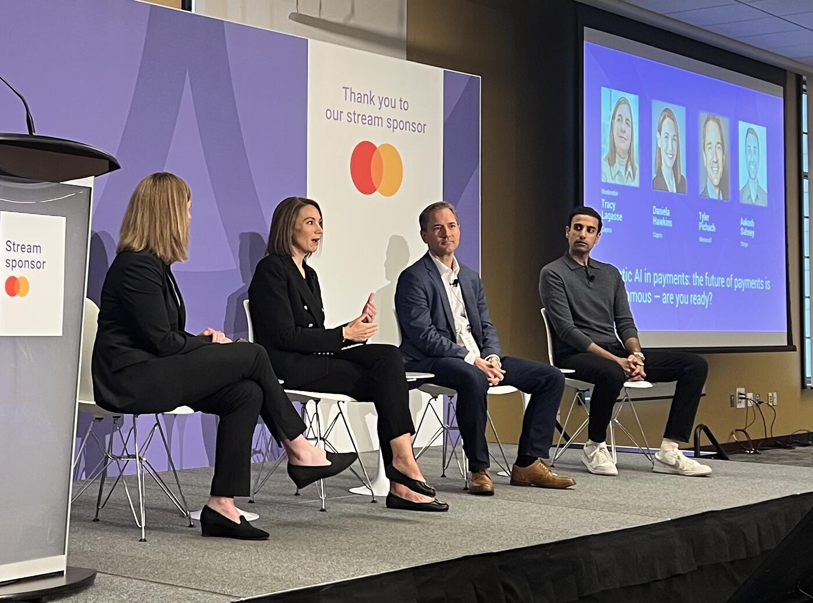

At Payments Canada Summit, the Industry Grapples With the Reality of Agentic Commerce
At this year's Payments Canada Summit, one of the most thought-provoking discussions focused not on faster rails or incremental payment innovation, but on something much larger: what happens when AI agents begin acting as economic participants themselves.
The session brought together leaders from Microsoft, Stripe, and Capco to explore a future where AI systems do not simply assist humans, but independently discover products, compare services, initiate payments, manage financial decisions, and interact directly with financial infrastructure.
Throughout the conversation, one message became increasingly clear: the payments industry is no longer debating whether autonomous commerce will emerge. The debate has shifted to how quickly it arrives — and whether banks, payment providers, regulators, and merchants are prepared for it.
The Dispute Problem

The panel began with a discussion around trust and disputes in an agent-driven economy. Daniela Hawkins described a future where consumers delegate purchasing decisions to AI agents, only to later dispute transactions with their bank.
"Now my agent went out and bought my sneakers, and I didn't receive them," she said. "Or maybe I just don't have great intent, and I call my bank and I say, 'I need to dispute this charge.'"
That simple scenario quickly revealed the deeper challenge facing the industry. If an autonomous agent makes a purchase on behalf of a user, what evidence determines liability? What data needs to be stored? Who becomes accountable?
Hawkins pointed to the growing emergence of cryptographic transaction receipts around agentic AI activity and questioned whether banks are even prepared to capture and use that information. "You authorized an agent to do that on your behalf," she said, imagining the future response from financial institutions.
Orchestration Across an Agent Mesh
The panel repeatedly returned to a central theme: orchestration. In the emerging AI economy, transactions may pass through multiple AI systems, APIs, wallets, identity providers, payment networks, and merchants before settlement occurs. The challenge is no longer simply moving money. It is coordinating trust across a chain of autonomous systems.
Tyler Pichach of Microsoft described this as an "agency model," where multiple AI systems interact simultaneously, often across different ecosystems. Referring to the widespread use of tools like Copilot, Claude, and ChatGPT, he noted that users already operate across multiple AI environments today. In the future, those systems will increasingly communicate with each other directly.
"How do you navigate across all of those different agents that are having effectively different conversations?" he asked. "And in the future, especially in the machine-to-machine world, they're having conversations together."
That evolution raises difficult questions around regulation and liability. The panel explored scenarios where AI assistants may soon offer financial recommendations based on real-time banking and transaction data. Pichach referenced integrations like Plaid and Perplexity as examples of how quickly these ecosystems are converging.
If an AI assistant suggests a payment or financial action that later proves harmful, who becomes responsible? The LLM provider? The merchant? The data aggregator? The bank?
"I think there is going to be a regulatory environment in Canada that will come forward," Pichach said, adding that frameworks such as open banking and PSD regulations in Europe will likely need to evolve rapidly to address agentic finance.
Fraud: Already Outrunning Defenders
The conversation then shifted toward fraud and risk management — perhaps the most urgent concern in the room.
Aakash Sahney of Stripe noted that fraud is already evolving faster than many platforms can manage. Stripe surveyed leaders across thousands of embedded-finance and payments platforms and found that 75% believed fraud was advancing too quickly for them to keep up.
The challenge is no longer limited to stolen credentials or traditional payment fraud. Fraudsters can now create realistic fake websites, synthetic businesses, forged documents, and convincing online identities using AI.
Yet the panel also argued that AI itself may become the industry's most powerful defensive tool. Stripe recently introduced a payments foundation model trained on the enormous volume of transactions flowing through its infrastructure — nearly $2 trillion globally last year. Sahney explained that these systems can identify fraud patterns impossible for humans to detect manually.
"The cat-and-mouse game of risk management doesn't change, even if the mechanisms change."
One striking moment came when the panel asked how many organizations in the audience were already using LLMs directly inside their fraud systems. Only a small number of hands were raised.
"That's telling," Pichach responded, observing that fraudsters are already aggressively leveraging AI while much of the financial industry is still experimenting cautiously.
Collapsing the Funnel
As the discussion evolved, the panelists became increasingly focused on opportunity rather than risk alone.
Pichach described the next wave of commerce as "collapsing the funnel" — compressing discovery, onboarding, payment, and post-purchase interactions into a single conversational AI experience.
Using a hypothetical example, he described asking Copilot to recommend the best credit card based on his lifestyle and spending habits. The AI assistant would narrow the options, complete onboarding forms automatically using existing user context, issue a virtual card instantly, and place it directly into a wallet — all within one continuous interaction.
"That is ultimate collapsing the funnel," he said.
The broader implication is that AI systems may soon become the primary interface through which consumers discover and purchase financial products.
The panel compared this shift to earlier technology disruptions that initially seemed impossible. One speaker referenced how taxi medallions once appeared untouchable before ride-sharing platforms radically changed the economics of transportation. "People just couldn't conceptualize that," the moderator remarked.
Stripe shared data suggesting the transition is already accelerating. According to Sahney, traffic from LLMs to Stripe's developer documentation increased between seven and ten times over the past six months, signaling that agents are increasingly reading and interacting with payment infrastructure directly.
"We're going to again be surprised by how far we've come," he predicted.
Microsoft echoed that belief with equally strong signals from infrastructure investment. Pichach pointed to the enormous scale of global AI data center construction and the continuing decline in token costs as evidence that the industry is still on a rapid curve toward broader financial optimization.
That possibility raises another profound shift: trust itself may increasingly migrate from traditional institutions toward AI assistants. "It's moving towards these LLMs," he said. "Which is absolutely fascinating."
Readiness: What Banks Should Do Now
Toward the end of the session, the panel focused on readiness.
Daniela Hawkins urged organizations to stop treating AI, digital assets, stablecoins, tokenized deposits, and payment modernization as separate conversations. In her view, all of these trends are converging simultaneously.
"We cannot underestimate digital assets, things like stablecoin, things like tokenized deposits. All those things are connected."
She also warned that banks still operate heavily on legacy infrastructure and need to think carefully about how older systems integrate with modern AI capabilities.
Pichach encouraged the audience to study emerging standards such as the x402 Protocol, which aims to support AI-native payment interactions, stablecoins, and machine-to-machine commerce.
"Learn," he told the audience plainly. "That's the number one."
Identity and Rogue Agents
The final audience questions brought the discussion full circle back to identity and control.
One attendee asked how the industry plans to handle onboarding and identity verification when AI agents increasingly act on behalf of users. Another raised concerns about rogue AI agents making autonomous financial decisions or even transferring funds incorrectly after misinterpreting online content.
Microsoft explained that AI agents inside its ecosystem are increasingly treated like employees — with their own identities, permissions, governance rules, and auditability controls. Meanwhile, Capco described experiments where multiple AI agents supervise and validate the actions of other agents to reduce hallucinations and unauthorized behavior.
Conclusion
The overarching message from the session was neither blind optimism nor fear. Instead, the panel reflected an industry beginning to realize that payments infrastructure is evolving into something much larger than payment processing itself.
The future being discussed was one where trust, identity, AI reasoning, financial decision-making, and transaction execution merge into a single programmable ecosystem.
And while many of the rules remain undefined, few in the room seemed to doubt that the transition has already begun.
Key Takeaways
- 75% of platforms Stripe surveyed believe fraud is advancing faster than they can keep up.
- Stripe processed ~$2T globally last year — basis for a new payments foundation model.
- LLM traffic to Stripe docs grew 7–10x in 6 months — agents are already reading payment infrastructure directly.
- Few in the room are using LLMs inside fraud systems today; fraudsters already are.
- Microsoft treats AI agents like employees: own identity, permissions, audit.
- Watch the x402 Protocol for machine-to-machine commerce.
- The funnel collapses: discovery → onboarding → issuance → wallet in one conversational flow.